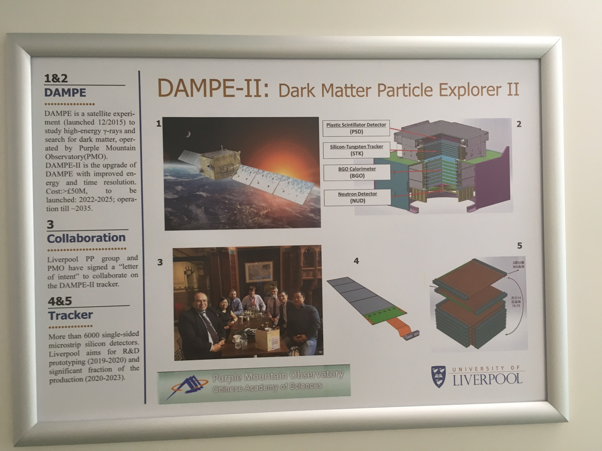

Introduction
With direct access to cosmic photons covering a wide energy range from GeV to TeV, and with a much improved pointing and energy resolution compared with the Fermi-LAT, the Very Large Area gamma-ray Space Telescope (VLAST, also named DAMPE-II) mission aims to probe two key scientific questions in Particle Astrophysics:
1. What is the origin of cosmic rays?
2. How can high energy particles and gravitational waves tell us about the extreme universe?
Apparatus is a satellite-based tracking system and calorimeter.
In 2017 Liverpool particle physics group and Purple Mountain Observatory (PMO) began collaborating on silicon tracker R&D to develop the tracker for VLAST.
Fig.1 VLAST (DAMPE-II) project in Liverpool.

Fig.2 VLAST tracker detector 1/4 layer demo.

Fig.3 VLAST tracker sensor test module.
Preliminary results
Channel
384 in total
Noise
RMS noise of most sensor channels (>97%) are less than 700e-.
Linearity
For most channels(>95%) Intergral Non-Linearity<5%.